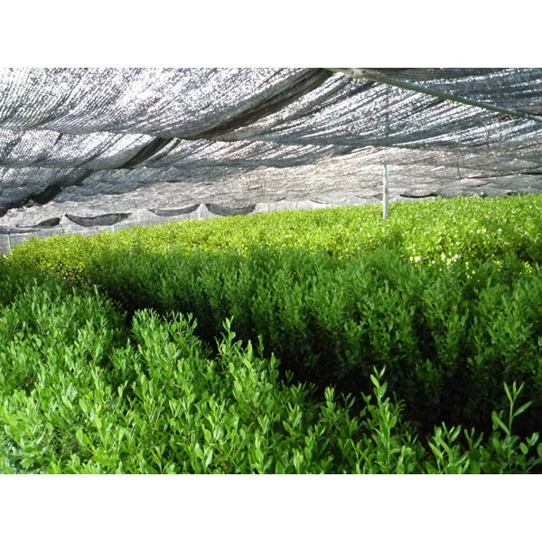
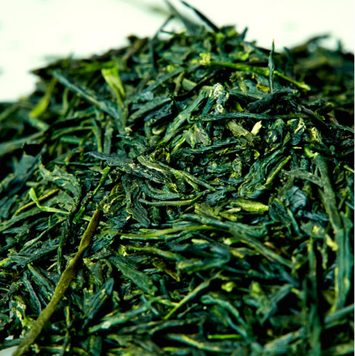
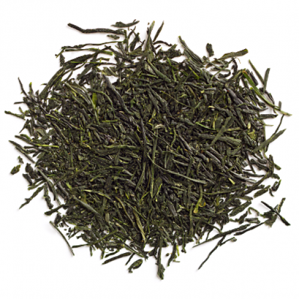
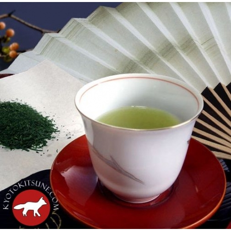

The art of brewing tea is something that varies greatly between cultures. Gyokuro is a high grade of Japanese tea that is known for being particularly difficult to prepare properly but can be quite rewarding if prepared well. 
In order to get the right flavor in the leaves, the plants are shaded, causing them to produce more chlorophyll to compensate for the inadequate light levels. The highest grades of tea are made from the first buds to form in the spring. Though most tea is bought well dried, gyokuro is ideal when there is still some moisture in the leaves like this.

While not bad, dried out gyokuro such as this is not quite ideal.

1 ounce of tea is used for every 6 ounces of water, but this may vary by individual taste. Heat the pot to roughly 150 degress fahrenheit, if the temperature rises above 160, the tea may "burn" and release chemicals that may cause the tea to become bitter. Remove the tea from the water roughly every 30 seconds to taste, the tea itself should be a bright green.
